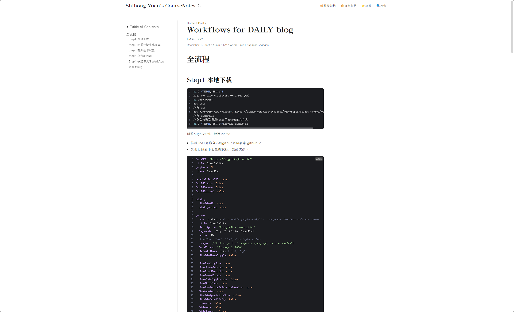
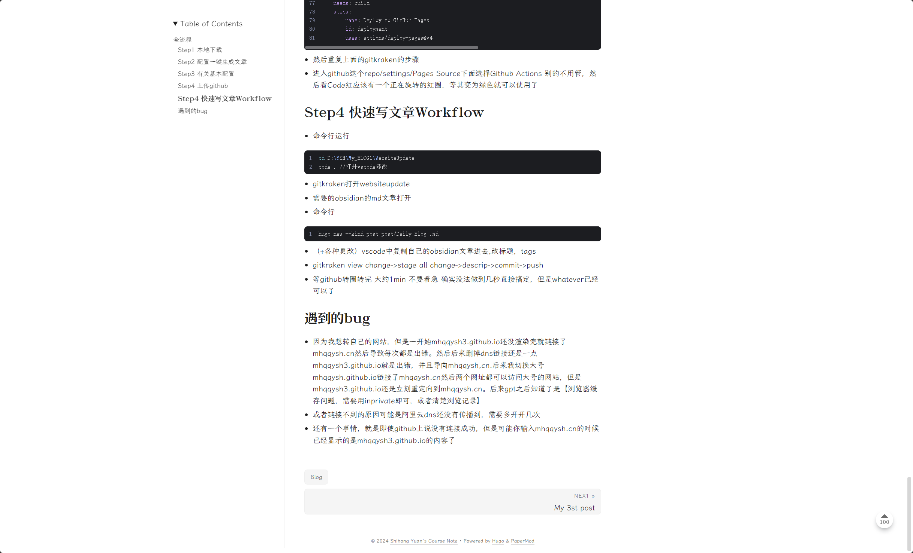
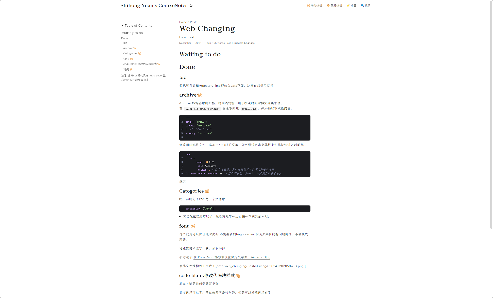

概述
把发布这件事当作基础设施
这个项目的重要性不在于技术有多新，而在于它尽可能降低了写作和发布的阻力。逻辑其实很简单：如果更新过程太麻烦，笔记站很快就会失去生命力；如果流程足够轻，写作才能真正持续下去。
这也正是为什么原始页面的总结非常短，却非常准：博客的意义在于持续更新，而第一步就是让更新成为一件简单的习惯。
计算机项目 / 博客基础设施
一个轻量的博客与课程笔记系统，重点不在于技术复杂度，而在于让发布和更新足够顺手、足够可持续。
概述
这个项目的重要性不在于技术有多新，而在于它尽可能降低了写作和发布的阻力。逻辑其实很简单：如果更新过程太麻烦，笔记站很快就会失去生命力；如果流程足够轻，写作才能真正持续下去。
这也正是为什么原始页面的总结非常短，却非常准：博客的意义在于持续更新，而第一步就是让更新成为一件简单的习惯。
我学到了什么
这个项目让我开始真正关心域名配置、自动发布流程，以及从本地笔记到公开页面之间最实际的路径。从这个意义上说，它既是工程问题，也是习惯设计问题。
首页截图

课程笔记与博客系统对外呈现的主页面。
更多页面




补充展示这个博客系统在阅读体验和内容组织上的状态。